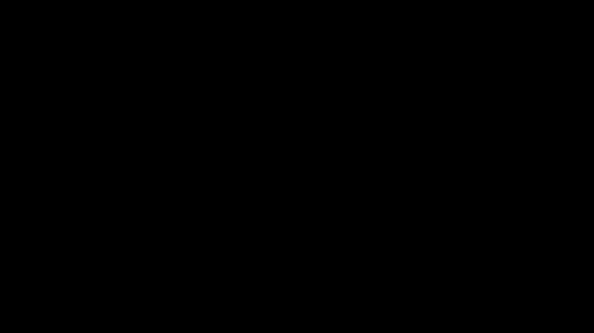
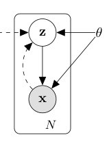
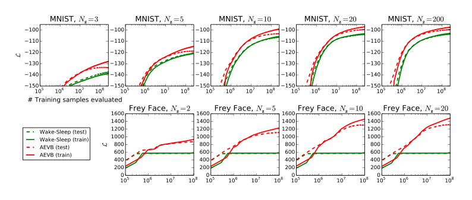
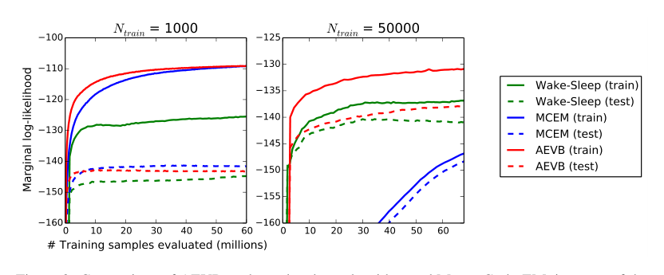
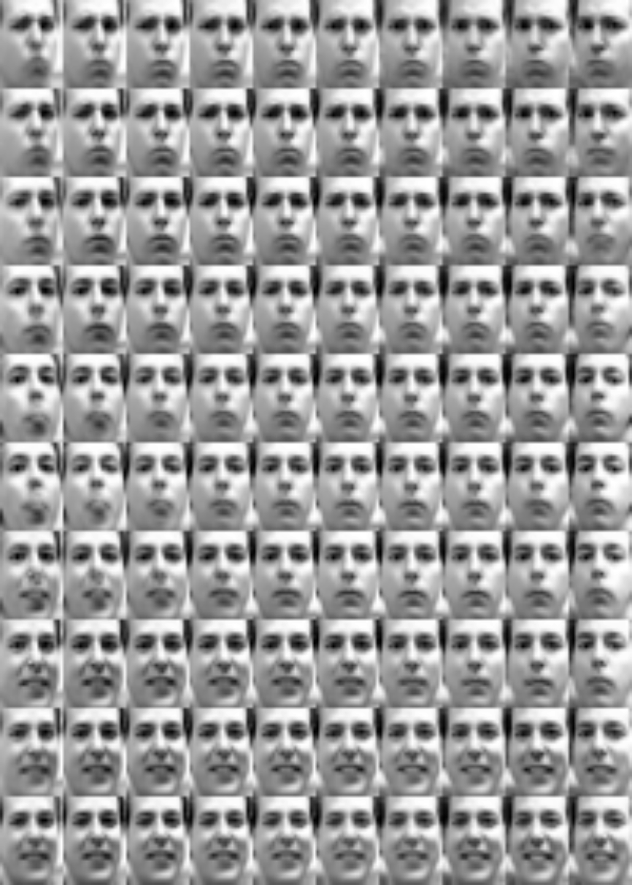

Auto-Encoding Variational Bayes

| Architecture Type | Stochastic Variational Inference / Autoencoder |
|---|---|
| Key Innovation | Reparameterization trick for backpropagating through stochastic nodes. |
| Performance Metric | Efficient approximation of the Evidence Lower Bound (ELBO). |
| Computational Efficiency | Scales to large datasets using Stochastic Gradient Variational Bayes (SGVB). |
| Venue | International Conference on Learning Representations |
| Year | 2013 |
| Citations | 17041 |
| DOI | Link |
Auto-Encoding Variational Bayes introduced the Variational Autoencoder (VAE), a powerful generative model that combines the principles of Bayesian inference with deep learning. By introducing the 'reparameterization trick,' the authors enabled the efficient training of directed probabilistic graphical models with continuous latent variables using standard backpropagation. This work provided a scalable solution for approximate inference in complex datasets, leading to significant advancements in manifold learning and generative modeling.
Approximate Inference and the ELBO
A fundamental problem in Bayesian statistics is the intractability of the posterior distribution $p(z|x)$ for complex models. The authors propose using a recognition model $q_\phi(z|x)$—an encoder—to approximate this true posterior.
The training objective is to maximize the Evidence Lower Bound (ELBO), which balances the reconstruction quality of the data with the similarity of the approximate posterior to a prior distribution (typically a standard Gaussian). This ensures that the latent space is well-structured and can be sampled to generate new data.
The Reparameterization Trick
The most significant technical hurdle in training VAEs is that backpropagation cannot flow through random sampling operations. If we sample $z$ directly from $q_\phi(z|x)$, the gradient with respect to the encoder parameters $\phi$ is not well-defined.
The authors solve this with the **reparameterization trick**. Instead of sampling $z$ directly, they express $z$ as a deterministic transformation of an auxiliary noise variable $\epsilon$: $z = \mu + \sigma \odot \epsilon$, where $\epsilon \sim \mathcal{N}(0, I)$. This moves the stochasticity into an input branch, allowing gradients to flow through $\mu$ and $\sigma$ to the encoder.
SGVB Estimator and AEVB Algorithm
The paper introduces the Stochastic Gradient Variational Bayes (SGVB) estimator, which provides a way to compute gradients of the ELBO using mini-batches of data. By applying the reparameterization trick, the ELBO becomes differentiable, enabling the use of standard stochastic gradient ascent algorithms like Adam.
The Auto-Encoding Variational Bayes (AEVB) algorithm is the practical implementation of this framework, where the encoder and decoder (generative model) are neural networks trained jointly to minimize the total loss (reconstruction error plus KL divergence).
Comparison with Traditional Methods
Before VAEs, approximate inference often relied on computationally expensive methods like Mean Field Variational Inference or Markov Chain Monte Carlo (MCMC). These methods struggle to scale to the large, high-dimensional datasets common in modern machine learning.
VAEs demonstrated superior performance in manifold learning and image generation, producing smooth latent representations where nearby points in $z$-space correspond to similar data points in $x$-space. While GANs often produce sharper images, VAEs offer a more stable training process and a principled probabilistic framework.
Concept Breakdown
A neural network that maps input data $x$ to the parameters of a latent distribution (mean and variance).
A neural network that takes a sample from the latent space $z$ and attempts to reconstruct the original input $x$.
A method to rewrite a random variable so that it becomes differentiable with respect to its distribution's parameters.
A mathematical measure of the difference between two probability distributions, used in VAEs to regularize the latent space.
Evidence Lower Bound; the objective function that VAEs maximize to train both the encoder and decoder.
Mathematics
Reparameterization Trick
| Symbol | Meaning |
|---|---|
| $\mu$ | Learned mean of the latent distribution |
| $\sigma$ | Learned standard deviation |
| $\epsilon$ | Random noise from a standard normal distribution |
The ELBO Objective
| Symbol | Meaning |
|---|---|
| $D_{KL}$ | Kullback-Leibler divergence |
| $q_\phi$ | The encoder (recognition) model |
| $p_\theta$ | The decoder (generative) model |
Figures and Explanations

Illustration of the reparameterization trick, showing how the stochastic sampling node is 'moved' to allow gradients to flow back to the encoder.

Comparison of different estimators for the variational lower bound, showing the efficiency of the SGVB estimator.


See Also
References
- Stochastic Back-propagation and Variational Inference in Deep Latent Gaussian Models - Danilo Jimenez Rezende, S. Mohamed et al. (2014)
- Stochastic Backpropagation and Approximate Inference in Deep Generative Models - Danilo Jimenez Rezende, S. Mohamed et al. (2014)
- Black Box Variational Inference - R. Ranganath, S. Gerrish et al. (2013)
- Deep AutoRegressive Networks - Karol Gregor, Ivo Danihelka et al. (2013)
- Deep Generative Stochastic Networks Trainable by Backprop - Yoshua Bengio, Eric Thibodeau-Laufer et al. (2013)
- Stochastic variational inference - M. Hoffman, D. Blei et al. (2012)
- Fixed-Form Variational Posterior Approximation through Stochastic Linear Regression - Tim Salimans, David A. Knowles (2012)
- Variational Bayesian Inference with Stochastic Search - J. Paisley, D. Blei et al. (2012)
- Representation Learning: A Review and New Perspectives - Yoshua Bengio, Aaron C. Courville et al. (2012)
- Practical Variational Inference for Neural Networks - Alex Graves (2011)
- Adaptive Subgradient Methods for Online Learning and Stochastic Optimization - John C. Duchi, Elad Hazan et al. (2011)
- To Center or Not to Center: That Is Not the Question—An Ancillarity–Sufficiency Interweaving Strategy (ASIS) for Boosting MCMC Efficiency - Yaming Yu, X. Meng (2011)
- Fast Inference in Sparse Coding Algorithms with Applications to Object Recognition - K. Kavukcuoglu, Marc'Aurelio Ranzato et al. (2010)
- Efficient Learning of Deep Boltzmann Machines - R. Salakhutdinov, H. Larochelle (2010)
- Stacked Denoising Autoencoders: Learning Useful Representations in a Deep Network with a Local Denoising Criterion - P. Vincent, H. Larochelle et al. (2010)
- A General Framework for the Parametrization of Hierarchical Models - O. Papaspiliopoulos, G. Roberts et al. (2007)
- EM Algorithms for PCA and SPCA - S. Roweis (1997)
- Gaussian Processes for Regression - Christopher K. I. Williams, C. Rasmussen (1995)
- The "wake-sleep" algorithm for unsupervised neural networks. - Geoffrey E. Hinton, P. Dayan et al. (1995)
- Auto-association by multilayer perceptrons and singular value decomposition - H. Bourlard, Y. Kamp (1988)